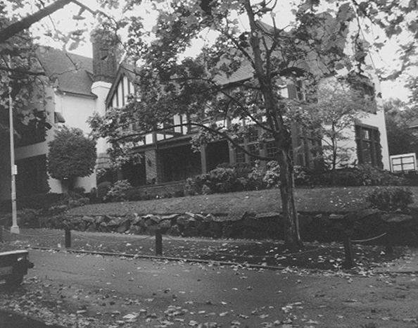

Chapter 26 on the roll
The Theta Theta


- Position on the roll#26
- InstitutionUniversity of Washington
- Chartered1916
- StatusActive since 1916
- Coat of armsfull-size PDF
Notable brothers of the Theta Theta
In the archive
Pages that name the Theta Theta Chapter or its institution.
Named on 760 pages across 322 volumes of the archive.
…resident Adams of the University of Wisconsin; President Harrington of the University of Washington; Professors D'Ooge, Walter, and Worcester of the University of Mich igan, _Hurd and Abel of Johns Hopkins, Gayley of Califor nia; Knight of the Ohio…
Page45…solution No. 7�Resolved, That the petition of the Phi Kappa Society of the University of Washington be denied by this Convention.
…d. Bro. Lovett (Epsilon) presented petition from the Phi Kappa Society of University of Washington. Referred to Committee on New Business. Under suspension of the rules Bro. Babst (Phi, delegate of the Council) offered a resolution providing for t…
…o. Grimes (Epsilon) presented the petition of the Phi Kappa Society of the University of Washington for a Charter of Psi Upsilon. Referred to the Committee on New Business. (Appendix E) The Committee to Nominate Members of the Executive Council re p…
…To the Committee on New Business the petitions of Phi Kappa Society of the University of Washington, of Pi Upsilon Society of the University of Kansas and of Chi Delta Psi Society of the University of Toronto, bronze tablets of Founders and Chapter…
…Bishop S. C. Partridge (Beta '80) j|| petition of Phi Kappa Society of the University of Washington,^! presented and supported in a * Appendix A^ * � Appendix A^ *** Appendix B t Appendix C t Appendix D � Appendix E II Appendix E^ f[ Appendix F
…an '02. Phi Kappa Society. The application of the Phi Kappa Society of the University of Washington, which was approved by the Convention of 1915, has now been approved by each individual Chapter of the Fraternity, and as soon as convenient to parti…
Page16…red service in the military, naval or civil departments of the Government. Theta Theta Chapter. The application of the Phi Kappa Society of the University of Washington for a Charter of Psi Upsilon having been approved by the Convention of 1915…
Page23…eighteenth hole in the graded scholarship standing of fraternities at the University of Washington, into sixth place, the improvement being the greatest recorded for any organization on the campus. The Theta Theta's standing was also five places hi…
Page56…ign, 111. DELTA DELTA � Williams College Williamstown, Mass. THETA THETA � University of Washington 4532 Eighteenth Ave. N. E., Seattle, Wash. NU � University of Toronto 8 Willcocks St., Toronto, Canada 55
…ign, 111. DELTA DELTA � Williams College Williamstown, Mass. THETA THETA � University of Washington 4532 Eighteenth Ave. N. E., Seattle, Wash. NU � University of Toronto 8 Willcocks St., Toronto, Canada 123
…'21, gave us a very interesting talk on the condition of athletics at the University of Washington. It is also well to state that he handled himself in a very creditable manner during the ques tioning and discussion which took place as his talk pro…
…mpaign, 111. DELTA DELTA�Williams College Williamstown, Mass. THETA THETA� University of Washington 4532 Eighteenth Ave. N. E., Seattle, Wash. ]>fU_UNlVERSiTY OF TORONTO 8 Willcocks St., Toronto, Canada The Executive Counch.�1921-1922 President, H.…
Page5…Champaign, IU. DELTA DELTA�Williams College WiUiamstown, Mass. THETA THETA�University of Washington 4532 Eighteenth Ave., N. E., Seattle, Wash. NU�University of Toronto 8 WiUcocks St., Toronto, Canada The Executive CoxnvciL�1921-1922 President, H. L…
…Champaign, lU. DELTA DELTA�Williams College WiUiamstown, Mass. THETA THETA�University of Washington 4532 Eighteenth Ave., N. E., Seattle, Wash. NU�University of Toronto 8 WiUcocks St., Toronto, Canada The Executivb Councii^1921-1922 President, H. L.…
…ampaign, 111. DELTA DELTA�Williams College Williamstown, Mass. THETA THETA�University of Washington 4532 Eighteenth Ave., N. E., Seattle, Wash. NU� University of Toronto 8 WUlcocks St., Toronto, Canada THE EXECUTIVE COUNCIL, 1922-1923 President, H.…
…hampaign, IU. DELTA DELTA�Williams College Williamstown, Mass. THETA THETA�University of Washington 4532 Eighteenth Ave., N. E., Seattle, Wash. NU� University of Toronto 8 WiUcocks St., Toronto, Canada THE EXECUTIVE COUNCIL, 1922-1923 President, H.…
…ampaign, III. DELTA DELTA�Williams College Williamstown, Mass. THETA THETA�University of Washington 4532 Eighteenth Ave., N. E., Seattle, Wash. NU� University of Toronto 65 St. George St., Toronto, Canada THE EXECUTIVE COUNCIL, 1922-1923 President,…
…Champaign, IU. DELTA DELTA�Williams College WiUiamstown, Mass. THETA THETA�University of Washington 4532 Eighteenth Ave., N. E., Seattle, Wash. NU� University of Toronto 65 St. George St., Toronto, Canada THE EXECUTIVE COUNCIL, 1922-1923 President,…
…ampaign, lU. DELTA DELTA�Williams College. Williamstown, Mass. THETA THETA�University of Washington 4532 Eighteenth Ave., N. E., Seattle, Wash. NU� University of Toronto 65 St. George St., Toronto, Canada THE EXECUTIVE COUNCIL President, H. L. Bridg…
…hampaign, lU. DELTA DELTA�Williams College Williamstown, Mass. THETA THETA�University of Washington 4532 Eighteenth Ave., N. E., Seattle, Wash. NU� University of Toronto 65 St. George St., Toronto, Canada THE EXECUTIVE COUNCIL President, H. L. Bridg…
…hich final plans were laid for the building of a new chapter house for the Theta Theta Chapter at the University of Washington, at the corner of 19th avenue Northeast and East 47th street. Building will begin next spring and the house will be c…
…ampaign, 111. DELTA DELTA�Williams College Williamstown, Mass. THETA THETA�University of Washington 4532 Eighteenth Ave., N. E., Seattle, Wash. NU� University of Toronto 65 St. George St., Toronto, Canada THE EXECUTIVE COUNCIL President, H. L. Bridg…
…ongs. BROTHERS CALLOW, THETA THETA, '16, AND BUTLER, '23 Coach the Crew at University of Washington THE University of Washington crews next year are again to be coached by a one hundred per cent Psi U coaching staff: Brother "Rusty" Callow, Theta Th…
…hampaign, IU. DELTA DELTA� Williams College WilUamstown, Mass. THETA THETA�University of Washington 4532 Eighteenth Ave., N. E., Seattle, Wash. NU� University of Toronto 65 St. George St., Toronto, Canada THE EXECUTIVE COUNCIL President, Earl D. Bab…
…ampaign, 111. DELTA DELTA�Williams College Williamstown, Mass. THETA THETA�University of Washington 4532 Eighteenth Ave., N. E., Seattle, Wash. NU� University of Toronto 65 St. George St., Toronto, Canada THE EXECUTIVE COUNCIL President, Earl D. Bab…
…Champaign, lU. DELTA DELTA�WiLLLUMS College WiUiamstown, Mass. THETA THETA�University of Washington 1818 E. 47th St., Seattle, Wash. NU� ^University of Toronto 65 St. George St., Toronto, Canada THE EXECUTIVE COUNCIL President, Earl D. Rabst Iota 11…
…L. Garvin, Delta '97 Oliver Dennett Grover A^ N. A., Omega '82 New Home of Theta Theta Chapter ------------ 225 McGiuL University and Epsilon Phi Fraternity -------- 226 Worthy of Refuection ---------------- 229 231 William Pierce Carpenter, Io…
…aign, III. DELTA DELTA� ^Williams College Williamstown, Mass. THETA THETA� University of Washington. . .1818 E. 47th St., Seattle, Wash. NU� Univebsity of Toeonto 65 St. George St., Toronto, Canada THE EXECUTIVE COUNCIL President, Eael D. Babst Iota…
…ks and catalogues 164.55 Chatham Phenix Natl. Bk. & Tr. Co. Services 55.74 Theta Theta Chapter 1925 Convention Expense 150.00 Expense� new catalogue 146-99 Special appropriations a/c The Diamond 3,382.49 Expense Council members official visits…
Page24…third. Burial was at Oak View Cemetery, at Royal Oak. NOTICE OF EXPULSION The Theta Theta Chapter announces the expulsion of Corliss Sher man, class of 1927.
…if they have another Convention along about 1938, I shall again be there. The Theta Theta Chapter of the University of Washington is in a very flourishing condition, and as long as Brother A. P. Sawyer, Beta '80, remains on the job as faithfuUy an…
…Bob Butler is at Annapolis, coaching the Navy. John Ward has THETA THETA� University of Washington
Page69…bout February lat. Edw. p. Cunningham, Jb., Assooiate Editor. THETA THETA� University of Washington /^UR recently-acquired freshman claaa under Brother Rusty Callow. Aside from just now occupies the position of these eight, two are big factors on th…
Page67…catalogues 155.70 Chatham Phenix National Bank & Trust Co., Services 67.28 Theta Theta Chapter 1926 Convention Expense 150.00 Epsilon Chapter 1925-6 Conventions 230.00 Expense Council Members official visits to Chapters, Council meetings 593.76…
Page22…n Bacon are regularly turn ing out for managerial positions in THETA THETA�University of Washington
Page65204 The Diamond of Psi Upsilon THETA THETA�University of Washington TF we were to write a history of the Theta Theta since the publication of the last Diamond we would surely have a hyper-mournful plea for sympathy, b…
Page84…ilon� ^University of California Delta Delta� Williams College Theta Theta� University of Washington BETA� Yale University 'T'O lighten the gloom that the impending June exams have cast over the Beta comes the news that the long pe riod of suspense i…
Page46…ings in a moderate state of disorder. Without Brother Sawyer, THETA THETA� University of Washington
Page73126 The Diamond of Psi Upsilon THETA THETA�University of Washington A T the Founders' Day banquet last "^ November we were notably honored by the presence of Roland McKenzie, Sigma '29, and Brother (we slipped up on t…
Page66…day. Bill Shelly, Graham Smith, and Tom Humes (all lettermen). THETA THETA�University of Washington
Page82…ved) DELTA DELTA� Williams College (No communication received) THETA THETA�University of Washington
Page76…, Stan Allen, and Perry Hack are enjoying their European tour THETA THETA� University of Washington
…ersity of British Columbia. Brother Middleton expressed the opinion of the Theta Theta Chapter in regard to the Alpha Kappa Alpha Society of the University of British Colum bia. Motion was made and seconded, that the petition of the Alpha Kappa…
Page10…kett Beverly Hills, Calif. Robert Huddleson Hollywood, Calif. THETA THETA� University of Washington Class of 1932 Robert Griffiths Barteau Seattle, Washington Thomas Louis Bourns Seattle, Washington Frederick Greene Clark Seattle {Mercer Island) Lee…
…oquent alumni and undergraduates. On the evening of February 16, 1929, the Theta Theta Chapter was host to the members of the Association at a smoker held at the chapter house. Over fifty alumni were present to enjoy the excellent entertainment…
…68. Alpha Phi Alpha 2.6526 *� Organized nationally during past year here. UNIVERSITY OF WASHINGTON* FRATERNITY grade averages for the winter quarter rose to a point substantially above any record for a similar quarter in the records of the men's pe…
…. W. Von Ammon Winnetka, III. R. A. Whitaker Providence, R. I. THETA TEETA�University of Washington Class of 1933 Richard H. Culter New Westminster, B. C. John Selytin Doherty Tacoma, Wash. William V. Hannah Vancouver, Wash. Wilmot H. Lilly Seattle,…
…eta Chapter� Dues in arrears $42.25 Epsilon Chapter� Dues in arrears 61.75 Theta Theta Chapter� Dues in arrears 94.25 198.25 Investments at Cost (General Fund) - _ 8,902.33 Investments at Cost (Diamond Fund) 23,574.59 89 Song Books at $2.00 178…
TABLE OF CONTENTS PACE 50 Years in Psi Upsilon 99 Theta Theta Chapter Honors A. P. Sawyer, Beta '80. 101 Brother Frederic M. Sackett, Sigma '90 102 A Rhodes Scholar FROM the Phi 103 Dr. William G. Thayer, Gamma '85, Res…
…75 4 1.146 7 .964 30 1.018 23 1.037 19 1.291 2 1.170 5 .922 36 1.053 1.190 UNIVERSITY OF WASHINGTON FALL QUARTER FRATERNITIES (Including Pledges) 1. Alpha Kappa Lambda 2 2. Lander Hall 2 3. Tau Psi 2 4. Kappa Psi 2. 5. Tau Phi Delta 2. 6. Theta Kapp…
…riot on our Western coast, A. P. Sawyer, Beta '80, who in 1916 founded the Theta Theta Chapter at the University of Washington. One of the Theta Theta members this afternoon asked me if, in mentioning Brother Sawyer, I would say how dear he is…
…s from neighboring chapters. Cornelius Means, Assistant Editor THETA TRETA�University of Washington ELEVEN new members were initiated into the bonds of the Theta Theta on Sunday evening, April 12. The new brothers are Richard Taylor of Spo kane, Don…
…yalties to Brother K. P. Harrington 42.40 Expense-Redemption of Badge 3.00 Theta Theta Chapter Convention Expense 150.00 Charge off� 1 Catalogue, 5 Song Books, and 5 Sets Psi U Song Records Gratis 57.00 J. H. Small & Sons�William H.: Taft Flora…
Page26…Eliot Sargent Qii^i^y' ^^ss. Steven Mason Webb Syracuse, N. Y. THETA TEETA�University of Washington Class of 1933 (Additional) Seymour Alexander Davison Tacoma, Wash. Carter Winlon Humeston Tacoma, Wash.
…eks Des Moines, Iowa Robert Wright Williams Schenectady, N. Y. THETA THETA�University of Washington (Additional Pledges Class of 1933) John Schwager William Gourlay Class of 1934 Robert Elias Charles Lesh EPSILON PHI�McGi/Z University (Additional Pl…
…s from neighboring chapters. Cornelius Means, Assistant Editor THETA TRETA�University of Washington ELEVEN new members were initiated into the bonds of the Theta Theta on Sunday evening, April 12. The new brothers are Richard Taylor of Spo kane, Don…
…Taylor Normal, Illinois Albert Woolman Worthan Ithaca, N. Y. THETA THETA� University of Washington Class of 1934 Robert C. Hill Seattle, Washington John R. Read, Jr Vancouver, B. C. Class of 1935 Charles John Bartleson Seattle, Washington Bernard B…
…Convention Fund Expenditures : Omicron Chapter�1931 Convention - $ 500.00 Theta Theta Chapter�Allowance 1931 Convention 100.00 Epsilon Chapter� Allowance 1931 Convention 100.00 Printing and Mailing Convention Records 161.78 Expense Official De…
Page33…ampaign, III. DELTA DELTA� Williams College WUliamstown, Mass. THETA THETA�University of Washington 1818 E. 47th St., Seattle, Wash. NU� UNrvERSTTY OF TORONTO 65 St. George St., Toronto, Canada EPSILON PHI�McGnx University 3429 Peel St., Montreal, C…
Page70…cy. I can remember when the chapter of one of the best fraternities at the University of Washington sent three of its alumni representatives to me to protest an objection to a policy laid down be cause fraternity affairs were none of the university'…
…es Binghamton, N. Y. William Eric Williams � Rutherford. N. J. THETA TEETA�University of Washington Class of 1936 Earle W. Zinn, Jr Seattle, Wash. Henrey Gose McCleary Olympia, Wash. Walter Reseberg, Jr Seattle, Wash. Howard Edward Richmond Seattle,…
…ng took place in New York City and was the culmination of a romance at the University of Washington. They are now "at Home" at 2527 Norfolk Road, Cleveland, Ohio. Francis B. Crothers, Omega '22, is now associated with Haskell, Scott & Byrne of 120 S…
….ETA�University of Washington SINCE the announcement of the pledges by the Theta Theta Chapter last fall, two new members have been pledged. John Melquist, who has been working for a position in the freshman crew, and Bruce Bretland, who is a p…
…six years he labored incessantly to bring about the establish ment of the Theta Theta Chapter. He secured the approval and assistance of such influential friends as the late Brothers Herbert Lawrence Bridgeman, Gamma '66, and William Howard Ta…
…Phi Kappa Society of the University of Washington and after it became our Theta Theta Chapter, he was its constant and wise counsellor. Ralph M. Shankland, Phi '88 Ralph Martin Shankland, retired engineer, for many years a prominent resident o…
…he Theta. Down from the North have come brothers of the Theta Theta of the University of Washington. So tonight these two outposts of Psi U's frontier celebrate with you over the wire that binds us together for the moment. We assure you we are perme…
…off team. Having won our league championship in tennis we are THETA TBETA� University of Washington
…exceptionaUy fine year. Wallace C. Boyce, Associate Editor. THETA TB.ETA� University of Washington THE Theta Theta begias its season this year with a most auspicious outlook for the months to come. During the summer the Mother's Club in conjunction…
…een set aside for fraternity initiations at Associate Editor. THETA THETA� University of Washington {No Communication Received) NU� University of Toronto ONE more Christmas is over and the Nu is launched on the spring term. The Brothers are all back…
…"Rusty CaUow," the Coach, who, incidently, was one of the founders of the Theta Theta Chapter. Brother Bob Eraser, the outstanding crew stroke of last year, is again sure of his seat, barring injuries of course. In the Freshmen Boat, is Pledge…
…Cardwell, McCarthy, Glass, and Jenkins of the class of "38". THETA THETA� University of Washington
…de panel. An outdoor wool bunting Psi Upsilon flag and ballot box from the Theta Theta Chapter. A handsome morocco bound minute book from the Epsilon Chapter. A beautiful morocco bound guest autograph album and register from the Psi U Alumni of…
…1913 DELTA DELTA � Williams College Williamstown, Mass. 1916 THETA THETA � University of Washington 1818 E. 47th St., Seattle, Wash. 1920 NU � University of Toronto 65 St. George St., Toronto, Canada 1928 EPSILON PHI � McGill University 3429 Peel St…
Page253…Doran and Pledgeman Dick Doran. Pledgemen Draney and Flagg are THETA THETA University of Washington
Page63…lifornia in 1914, and the next year became an instructor of English at the University of Washington, returning to California in that capacity in 1916. At the outbreak of the World War he enlisted in the Marine Corps and served overseas, first as a l…
…lizabeth Potter Goodman of Philadelphia on September 30, 1936. THETA TBETA�University of Washington As Christmas and the last day of school near, the chapter pleasantly anticipates the yearly formal dinner-dance on the 18th of December. We are proud…
…presented such luminaries as Josef Hofmann, pianist, John Charles Thomas, The Theta Theta Chapter announces the addition of three new men to its pledge class. They are Pledgemen Jack Briggs, Roger Jones, and Don Thomp son. The Fraternity is well r…
…rner Orange Connecticut James O. McReynolds, Associate Editor. THETA THETA University of Washington With a very successful year nearly completed, the Theta Theta announces the initiation of the following men: Jack Briggs, Charles Bechtol, Joe Brothe…
…eta Theta stood thirteenth out of thhty-three national fraternities at the University of Washington. This was one group below the average of all men's organizations (2.332). Tau Kappa Epsilon tops the list with 2.540. The average for all men is 2.37…
…mber of the Fraternity and all the other members of the Fraternity. At the University of Washington where I stopped on my way back from Japan, the members of the chapter told me that The Diamond kept them informed on what was going on in the Fratern…
…set for Brother Mills' play. John A. Cooper, Associate Editor THETA THETA University of Washington A new deal has been inaugurated be tween the Alumni and active chapter. Monthly dinners are being arranged and are to be held in the chapter house. T…
…aking over the presidency of the Theta "Theta. He was recently THETA THETA University of Washington
…tling; and Gibson, squash. Mark S. Wellington Associate Editor THETA THETA University of Washington {The prize of$.').00for the second best Chap ter Communication is awarded to JoeBrotherton, Theta Theta.) Under the able leadership of Brother George…
…Hale House, group of his experiences at the the Union College Dining Hall. University of Washington and of After the dinner, at which the heads Psi Upsilon in the far west. He of the chapters gave brief talks, brought greetings from his own the grou…
…LTA DELTA� A A� Williams College� 1913 Williamstown, Mass. THETA THETA�� 0�University of Washington�1915 .1818 E. 47th St., Seattle, Wash. NU� N� University of Toronto� 1920 65 St. George St., Toronto, Canada EPSILON PHI�E 1^�McGill University�1928…
Page67…he served in the United States Marine Corps as a Captain. He taught at the University of Washington and at the University of California, and he finally settled down at Yale. But Mount Holyoke realized that al though women have their place in the wor…
186 THE DIAMOND OF PSI UPSILON THETA THETA University of Washington The brothers of the Theta Theta, al though under the spell of a rather pre mature case of spring fever occasioned by a period of unusually warm weath…
…on in in door practice. Harry N. Gifford, Jr. Associate Editor THETA THETA University of Washington The Theta opened the spring quarter by initiating 13 pledges: George Bartholick, Robert Butterfield, George Collins, Barton Douglas, Tom Gagliardi, J…
Page64…Reveley, Rochester, N.Y.; Alonzo B. See, II, Greenwich, Conn. THETA THETA University of Washington Class of 1941 : Emmett George Lenihan, Jr., Seattle, Wash. Class of 1942: Doyle Earie Fowler, Seattle, Wash. ; WUliam Carlton Guyles, Tacoma, Wash. ;…
…Illinois May 28, 1910 Delta Delta Williams College May 7, 1913 Theta Theta University of Washington June 10, 1916 Nu University of Toronto April 24, 1920 Epsilon Phi McGill University March 17, 1928 ADDRESS Forest Park Lane Ithaca, New York 81 Verno…
Page19Theta Theta Chapter House, University of Washington. Built in 1925 1818 East 47th Street, Seattie, Washington Theta Theta Installation Group, June 10, 1916
…d the active membership as 626; announced the approval of a Charter to the University of Washington on the application of the Phi Kappa Soci ety and that arrangements would soon be made for the installation; commended William P. MacCracken, Jr., Ome…
…hams College in 1913 on their way to the Convention at Amherst; and at the University of Washington in 1916 Bridgman, aided by Seattle alumni, installed the Theta Theta. Further extension was to come only after our participation in the World War had…
Page19…ght say "we put over or across." Within the year after the founding of the Theta Theta Chapter, a com mittee consisting of Brothers Wilham Floyd Way-Theta Theta '12, A. P. Omicron Chapter Sawyer-Beta '80 and Virgil M. Upton-Theta Theta '21 desi…
…goes to mak ing a successful party. Harry N. Gifford, Jr. Associate Editor University of Washington Under the able guidance of Brother Scott the chapter pledged a splendid freshman dele gation. Brother Williams is currently & skillfully heading the…
Page61…another informal house dance. John T. Tuttle Associate Editor THETA THETA University of Washington Although winter quarter on the University of Washington campus is hardly underway, the Theta Theta is already planning for an extensive rushing progr…
Page61…cted by the delegates was the granting of petition of the Phi Kappa of the University of Washington for ad mission into Psi Upsilon and the denial of one by the Pi Upsilon of the University of Kansas; the adop tion of resolutions that chapter let te…
…Diamond. William George Morrisey, III Associate Editor THETA THETA CHAPTER University of Washington Writing this report on the eve of an Axis declaration of war has necessitated the inclusion of several comments which might not otherwise have been m…
…has always been. John S. Vernay, Jr. Associate Editor THETA THETA CHAPTER University of Washington Scholarship The chapter's scholarship for the last school quarter was rather poor, and there seem to be no visible means of improve ment, for the gra…
Page60…he gift of the Delta Delta Chapter and of Stephen G. Kent, Williams, 1911. University of Washington On April 3, 1942, a group of the Theta Theta Chapter called on Lee Paul Sieg, President of the University of Washing ton. Those taking part were Davi…
…C. Raye P. Woodin, Jr.; '42 U.S.M.C. Ensign George S. Wright, '40 U.S.N.R. Theta Theta Chapter Lt. Comdr. Paul M. Flagg, '19 U.S.N.R. Ensign Bruce T. Whitehouse, '37 U.S.N. Epsilon Phi Chapter Lt. George F. Duncan, '38 R.C.N.V.R. P. J. C. Savag…
…Delta Williams College May 7, 1913 Williamstown, Massachusetts ThetaTheta University of Washington 1818 East 47th Street June 10, 1916 Seattle, Washington Nu University of Toronto 65 St. George Street April 24, 1920 Toronto, Canada Epsilon Phi McGi…
Page5…hapter faced the most trying crisis in the history of its existence on the University of Washington Campus; and only through a determined and loyal active and alumni chapter, along with the enrollment of a goodly number of boys who would normally be…
Page32…th plans for holding the 1943 Convention. Letter of the Dean of Men at the University of Washington in regard to scholarship at the Theta Theta, with tables supporting his statements. Preamble and Resolution adopted at a special meeting of the Gamma…
…rome W. Brush, Jr., '39, 530 Park Avenue, New York, N. Y. THETA THETA�e 0� University of Washington 4520-21st St., N. E., Seattle, Wash. John Wilson, '23, 814 2nd Avenue Bldg., Seattle, Wash. NU�Ts"�University of Toronto�1920 65 Si. George St., Toro…
Page35…t Jerome W. Brush, Jr., '39, 530 Park Avenue, New York, N. Y. THETA THETA� University of Washington c/o C. H. Carlander, Puget Sound Freight Lines, Foot of Marion St., Seattle 4, Wash. John Wilson, '23, 814 2nd Avenue Bldg., Seattle, Wash. NU�N� Uni…
Page35…l of 1911, a husky young '.giant matriculated in the freshman class at the University of Washington.- A ruddy complexion and muscular frame bespoke days of toil on the farm and in the forests of his native state. His brawny body was accompanied by a…
…ther Cushman was a student at the University of Washington at the time the Theta Theta Chapter was in stalled. He rowed on the 1915 and 1916 Varsity crews, the latter captained by Brother Russell S. Callow, 16, and
…erome W. Brush, Jr., '39, 530 Park Avenue, New York, N. Y. THETA THETA�e 9-University of Washington c/o Alumni President Lt. John Wilson, '23, 4008 Belvoir Place, Seattle 5, Wash. NU� N� UNiVERsrrY of Toronto� -1920 65 St. George St., Toronto, Canad…
Page35…erome W. Brush, Jr., '39, 530 Park Avenue, New York, N. Y. THETA THETA�0 6�University of Washington c/o Alumni President Lt. John Wilson, '23, 4008 Belvoir Place, Seattle 5, Wash. NU�N�University of Toronto� 1920 65 St. George St., Toronto, Canada J…
Page36…, son of Brother Lloyd Smith, and Ben Magill, son of Brother Fulton MagUl. The Theta Theta Chapter, despite its pres ent small size, is pursuing a careful rushing program. Every consideration is being given to the calibre of mshees, and the high st…
…hese years in the Chapter, He is one of the founders of Theta Theta at the University of Washington and ever since has been in close association with the Chapter and with the alumni of the Pacific Northwest. In 1942 seventy-two alumni gave Brother S…
…ances and meet the new brothers. Walter Woods Associate Editor THETA THETA University of Washington Since the University of Washington took over our house as a women's residence hall, the Theta Theta has been inactive on the campus, having only 3 ac…
…rome W. Brash Jr., '39, University Club, Bridgeport, Conn. THETA THETA-e 0-University of Washington� 1916. . .1818 E. 47th St., Seattle, Wash. Thomas L. Morrow '30, 1415 Newport Way, Seattle, Wash. NU� N� University of Toronto� 1920 65 St. George St…
Page35…rome W. Brush Jr., '39, University Club, Bridgeport, Conn. THETA THETA-e 9�University of Washington�1916. . .1818 E. 47th St., Seattle, Wash. Thomas L. Morrow '30, 1415 Newport Way, Seattie, Wash. NU� N�University of Toronto� 1920 65 St. George St.,…
Page35…rome W. Brush Jr., '39, University Club, Bridgeport, Conn. THETA THETA-e G-University of Washington�1916. ..1818 E. 47th St., Seattle, Wash. Frank I. White, '18, 2608 Shoreland Dr., Seattle 44, Wash. NU� N� University of Toronto� 1920 65 St. George…
Page35…we should get rolling soon. Douglas S. Gamble Associate Editor THETA THETA University of Washington In November of 1945 the Theta Theta once again took over the Chapter house at 1919 East 47th St., Seatde, Washington. How ever, the active Chapter wa…
…vention, held in the 114th year of the Psi Upsilon Fraternity and with the Theta Theta Chapter as host, was called to order at 10 :00 A.M. at the Washington Athletic Club. Seattle. Washington. by Earle W. Zinn, Theta Theta '36, Chairman of the…
…s we were in the last. William H. Gravem, '49 Associate Editor THETA THETA University of Washington After operating for three months under somewhat normal conditions for the first time in five years the Theta Theta is experiencing the activity it en…
The Theta Theta Chapter House The 1947 Convention of the Fraternity is to be held in Seattle on Thursday, Friday and Sa Theta Theta Chapter acting as host.
…y, Dean David Thomp son, Theta T'heta '16, vice-president emeri tus of the University of Washington, was presented by Convention Chairman Earle W. Zinn, and he in turn introduced Dr. Raymond B. Allen, the new President of the University. Dr. Allen w…
…tive Council at the first Convention of 'the Fratemity to be held with the Theta Theta Chapter. A Charter member of that Chapter and its first presiding officer, he had proposed the toast to "The Theta Theta" at the installa tion banquet on Jun…
…ffe, Theta Theta '18, en closing pamphlets relative to fraternities at the University of Washington. He reported receipt of communications in dicating that the Psi Upsilon of Philadelphia was holding a Founders' Day Dinner on No vember 24 in Philade…
…the spring term off. Geoffrey R. Bennett, Jr. Associate Editor THETA THETA University of Washington The "emblem of the chosen few" continues to be conspicuous about the University of Washington Campus, and by all indications wfll be heard from even…
128 THE DIAMOND OF PSI UPSILON THETA THETA University of Washington Bushing is once again coming into the spotlight of the Theta Theta. Summer rushing parties are aheady being planned. An exten sive rushing program co…
…ta Delta extends a friendly welcome to all visit ing Brothers. THETA THETA University of Washington (Delos W. McNutt, '48). The Theta Theta is very anxious to keep before the Fraternity the matter of further expansion on the Pacific coast. In partic…
Page22…erome W. Brush, Jr., '39, 530 Park Ave., New York 21, N.Y. THETA THETA-e O-University of Washington-1916. ..1818 E. 47th St., Seattle, Wash. Earle W. Zinn, '36, Eighth Floor, Hoge Bldg., Seattie 4, Wash. NU�N-University of Toronto-1920 65 St. George…
Page36…hillips, Theta Theta ' 1 7 Former Assistant Professor of Philosophy at the University of Washington, has been cleared of contempt of the State Un-Ameri can Activities Committee. Early in the year, � together with two other long-time profes sors he w…
…erome W. Brush, Jr., '39, 530 Park Ave,, New York 21, N.Y. THETA THETA-e G-University of Washington-1916. ..1818 E. 47th St., Seattle, Wash. Samuel M. Hess, '36, c/o Red Salmon Canning Co., 208 Colmnbia St., Seattle, Wash. NU� X� University of Toron…
Page39…ke your way to Williamstown. George F. Cherry Associate Editor THETA THETA University of Washington The Theta Theta begins its thirty-fifth year of existence upon furthering the precepts of the fraternity and rendering service to the university. Off…
…ill become a part of in the near future. William G. Mundt President of the Theta Theta Chapter In conjunction with the Zeta Zeta, Uni versity of British Columbia, the chapter is planning a weekend of events for the express purpose of bringing t…
…in for a visit to WilHamstown. W. Robert Mill Associate Editor THETA THETA University of Washington We here in Theta Theta at Washington again report "All's Well." This quarter the house is under the expert guidance of Bill Mundt, president; with ab…
…er. Stewart H. Hulse Associate Editor THETA THETA University of Washington The Theta Theta Chapter has started an other year here at the University of Wash ington and we, the active Chapter, hope that it will be as successful as our last one. Offic…
Page28…behalf of the petition. Alan F. Austin, Theta Theta '52, speaking for the Theta Theta Chapter, added that Chapter's endorsement of the petition. Fred D. Garner, Epsilon '47, President of the Psi Upsilon Alumni Association of Southem California…
"THOUGHTS ON FRATERNITY" WE have received from our Chap ter at the University of Washington a 36-page book, beautifully bound, the title page of which explains the objective: THOUGHTS ON FRATERNITY THETA THETA CHAPTER of PSI UPSILON A Confid…
…day and a date dinner on Sunday. Hugh Dolhy Associate Editor THETA THETA . University of Washington Spring quarter has now come into being at the University of Washington and, as usual, rushing is taking the spotlight. Parties are being held regular…
…the Delta Delta can again look forward to a fine year in 1952. THETA THETA University of Washington THETA THETA (Alan F. Austin, '52). As a note of introduction, we would fike to extend to all of you a warm greeting from the Brothers at Theta Theta…
…and meet their old friends. James G. Shanahan Associate Editor THETA THETA University of Washington Theta Theta is off to a new year with enthusiasm before and after a great rush week. We went through rush week and pledged twenty-one men, who, we fe…
…tion is progressing nicely. Douglas W. Downey Associate Editor THETA THETA University of Washington Of primary concern about the house in the recent week has been the annual OrphanBenefit Christmas Party, sponsored at the house in conjunction with t…
Page30…s graduation from the univer sity. Brother Ham became an instructor at the University of Washington, and then at the University of California. During this time he took a particularly active interest in matters of importance to undergradu ates, and,…
…r over a tall Tom Collins. Robert N. Cloutier Associate Editor THETA THETA University of Washington Spring quarter at the U. of W. has been one of much work and activities for the Brothers of Theta Theta. Under the guidance of officers Brother Rick…
Page28…of Redlands. The banquet opened with the singing of the Doxology. Songs by Theta Theta Chapter of Washington were sung with much spirit and an attempt to steal some of their thunder was made by California singing its own songs as loudly and lus…
…umber of delegates took part, and by agreement, it was understood that the Theta Theta Chapter and the Zeta Zeta Chapter would give further consideration te this matter and report to the Executive Council, and, if it appeared desirable, to the…
Page15…ing forward to seeing you! RoHERT N. Cloutier Associate Editor THETA THETA University of Washington With the affairs of the Chapter drawing to a close for the first quarter of the Washington school year, the Brothers of the Theta Theta look with sat…
…tstanding spring semester. Robert N. Cloutier Associate Editor THETA THETA University of Washington The past quarter has seen smooth sailing at the Theta Theta under the able leadership of Brothers Pete Wallerich, President, and Bill Lewis, Houseman…
…ch had the most undergraduate Brothers present was the Theta Theta, at the University of Washington, in Seattle, certainly one of the most distant chapters. From it came five undergraduates. Not to be outshone, however, the lone delegate from the Ze…
…f the Fraternity. President Weed then requested that the delegate from the Theta Theta Chapter report orally on the matter. Page Thirty-Six
Page38…A DELTA Williams College Delta Delta communication on page 72. THETA THETA University of Washington Ed Biley, Associate Editor With the first quarter of the school year coming to a conclusion and the holiday season approaching, Theta Theta takes thi…
Page30…main damp but happy members of the Delta Delta of Psi Upsilon. THETA THETA University of Washington Ed Biley, Associate Editor The Theta Theta is nearing the end of the second quarter at Washington. The past two months have been active ones for the…
Page34134 THE DIAMOND OF PSI UPSILON THETA THETA University of Washington Ed Riley, Associate Editor Once again the Theta Theta is nearing the end of spring quarter, as one can tell by the burning of the midnight off. But t…
Page24…r newly painted walls with footprints, fingerprints, and foam. THETA THETA University of Washington Bob Cole, Associate Editor Summer repairs, supervised by the alumni, put the chapter house in top shape and Theta Theta of Psi Upsflon expects anothe…
Page28…our Fratemity and our associates. Theta Theta� (Robert C. Reinholt, '56). The Theta Theta Chapter of Psi Upsilon began its 195455 .year at the University of Washington with a new pledge class of fourteen men. These men were quickly brought into ou…
Page22…drop in and sample Pa Wile's home cooking and our hospitality. THETA THETA University of Washington Ferris Dracobly, Associate Editor Holiday activities climaxed a successful autumn quarter for the Brothers of the Theta Theta. Among the activities o…
…ine view, are beautfful when (or If) the trees start to bloom. THETA THETA University of Washington Bob Reinholt Associate Editor Just back from our long awaited Spring vacation the Brothers of Theta Theta are once again ready to resume the task of…
Page29…ohnson, pledge, is helping to bolster the freshman footbaU line this year. The Theta Theta Chapter is extremely proud to announce the acceptance of Brother John Parrott into the Naval Air Academy at ' Pensacola, Fla. Brother Parrott left in August…
Page36…u Chapter; and RESOLVED : That the Convention commend and congratulate the Theta Theta Chapter for outstanding scholastic im provement during the 1955 academic year; and RESOLVED : That the Convention permit the Upsilon, EpsUon Nu, and Theta Th…
…aps you'll find it convenient to share these weekends with us. THETA THETA University of Washington Bowen King, Associate Editor The year 1956 finds the Brothers of the Theta 'Theta making a strong bid for top recognition on the campus and within th…
Page32…W. Brush, Jr., '39, 232 Golden Hill St., Bridgeport, Conn. THETA THETA�9 6�University of Washington� 1916 1818 E. 47th St., Seattle, Wash. Samuel M. Hess, '36, 8919 N.E. 10th, Bellevue, Wash. NU ^N University of Toronto� 1920 221 St. George St., Tor…
Page44…. Brush, Jr., '39, 232 Golden Hill St., Bridgeport, Conn. THETA THETA�e 6� University of Washington�1916 1818 E. 47th St., Seattle, Wash. Samuel M. Hess, '36, 8919 N.E. 10th, Bellevue, Wash. NU� N� UNrvERsrrY of Toronto� 1920 321 St. George St., Tor…
Page32…award for the Chapter showing the greatest scholastic improve ment and the Theta Theta Chapter also received congratulations for its scholastic improvement. Following the scholarship report and awards resolutions, in the inter est of scholarshi…
…enthusiasm in anticipation of next years rushing. The fraternities at the University of Washington are getting increasingly more competitive in every aspect of college activities. Every so often a par ticular fraternity appears to others as the top…
Page6574 THE DIAMOND OF PSI UPSILON THETA THETA University of Washington Kenneth Elliott, Jr., Associate Editor With fewer and fewer final adjustments to be made in our $150,000 addition to the Chapter House we of the Thet…
Page36…W. Brush, Jr., '39, 232 Golden Hill St., Bridgeport, Conn. THETA THETA�0 6�University of Washington� 1916 1S18 E. 47th St., Seattle, Wash. W. Byron Lane, '26, 1111 Dexter Horton Bldg., Seattle 4, Wash. NU� ^N� UNrvERsrrY of Toronto� 1920 221 St. Geo…
Page31…ization of our attempts to improve and strengthen the chapter. THETA THETA University of Washington The Theta Theta pledged thirty fine mem bers in 1956. Twenty-six of these men have now been initiated. 'This fraternity has shown the stiength that i…
Page39…W. Brush, Jr., '39, 232 Golden Hill St., Bridgeport, Conn. THETA THETA�0 6-University of Washington� 1916 1818 E. 47th St., Seattle, Wash. Malcolm A. Mclnnis, '50, 1106 Northern Life Tower, Seattle 1, Wash. NU�N�University of Toronto�1920 221 St. Ge…
Page12…ation of dele gates: twenty-nine chapters present, with credentials of the Theta Theta Chapter temporarily held up because of an alleged sum of money owed to the Fraternity. Franklin F. Bruder, Theta '25, Treasurer of the Executive Council, cla…
66 THE DIAMOND OF PSI UPSILON THETA THETA University of Washington Roger Maetinsen, Associate Editor Witii the close of the 1957-58 school year fast nearing, the brothers of the Theta Theta may look back on another f…
…e State of Washington. Although our members are chiefly graduates from our Theta Theta Chapter at the University of Washington, we boast broth ers from the Chi, Beta, Rho, and Epsilon Chap ters. At present our organization is ably headed by Pre…
Page19…year of the Theta Theta dominance in all phases of fraternity life at the University of Washington. NU CHAPTER This past year has been an active and com plete one for the Nu Chapter. Our rushing campaign in the fall was very successful, with fourte…
Page21…edentials and that 29 chapters were present with credentials with only the Theta Theta Chapter absent. On motion, duly adopted, this report was accepted (for list of delegates, see Appendix C of Records, pages 23-24) . The Committee on Chapter…
…ce Goodwin Delta Delta '59 Reprint from Delta Delta Newsletter THETA THETA University of Washington R. Joseph Kipper Associate Editor Since the faU quarter publication of The Diamond, the Theta Theta has made great
Page36…that spanned thirtyseven years. He and his wife, Dolly, whom he met at the University of Washington when both were students there, have returned to Seattle to make their home. A founder of the Theta Theta and a member of the Board of Governors of th…
…me W. Brush, Jr., '39, 232 Golden HiU St., Bridgeport 4, Conn. THETA THETA-University of Washington-1916 1818 E. 47th St. Seattle Wash Michael Weaver, Jr., '50, 3610 King St., Seattle 44, Wash. NU-University of Toronto-1920 65 St. George St., Toront…
Page42…orresponding Secretary position from Affred J. Schiavetti, Jr. THETA THETA University of Washington Peter Olmstead Associate Editor FaU quarter started with what looks like a very successful year for the Theta Theta chapter. First of aU, Washington…
…lly favored with a considerable contingent from Theta Theta Chapter at the University of Washington. Our news from this area is necessarily scarce, with the 1960-61 academic year just starting at the University of California. The officers and direct…
Page50…Delta looks forward to another successful and enjoyable year. THETA THETA University of Washington George Moore, Associate Editor To say that we of Theta Theta have had a very successful year would be a tremendous understatement. Psi Upsilon at Was…
Page32…chool of the University of Ilhnois. He was subsequentiy a librarian at the University of Washington, the University of Ilhnois, the University of Nebraska, Iowa State CoUege, the University of Rochester, WUlamette University, and the College of the…
…was his additional duty to serve as first president of the newly installed Theta Theta Chapter of Psi UpsUon. Later he was a member of both the Executive Council and of the Alumni As sociation Board of Governors of the Frater nity. Graduated fr…
…ook toward an even greater acceleration of the present trends. THETA THETA University of Washington The Theta Theta finds itseff faced with an ever growing chaUenge. The University of Washington is becoming more and more de manding scholastically. E…
Page28…president of the Northeastern Wisconsin Lffe Underwriters Association. The University of Washington Alumni at Philadelphia have an annual service at Valley Forge. Last year it was held on October 15 as a memorial service for Russell S. Callow, Theta…
…ll be maintained and the upward trend con tinued even further. THETA THETA University of Washington Lynn Martin, Associate Editor The Theta Theta has once again completed a very successful season here at the University of Washington. The fall quarte…
…Wilson B. HeUer, had inaccurate facts about the fraternity ratings at the University of Washington, and proceeded to make correc tions in figures of membership which had previously been cited. On motion duly made and seconded, the convention recess…
Page6…50th Anniversary celebration and many loyal graduate brothers. THETA THETA University of Washington Robert Schuck, Associate Editor Spring Quarter started out with a rush. Bob Joss, who was junior class president dur ing die present year, filed for…
…me W. Brush, Jr., '39, 232 Golden HiU St., Bridgeport 4, Conn. THETA THETA-University of Washington-1916 . .1818 N.E. 47th St., Seattle 5, Wash. Gayne L. Jones, '50, 111 Cedar Crest Lane, Bellevue, Wash. NU-University of Toronto�1920 221 St. George…
Page42…ears and have helped make it the fine organization that it is. THETA THETA University of Washington The first quarter here at the Theta Theta Chapter can be reviewed as nothing less than an outstanding success. Shortiy before rush week, the entire h…
…psilon's intentions to re main an active part of Wilhams life. THETA THETA University of Washington Dave Matthews, Associate Editor The Theta Theta's 15 graduating seniors can be justly proud of their four years of work in this chapter. It is an imp…
Page32…a pilot upon graduation. Brother Olmstead received a B.A. degree from the University of Washington. Associate Dean John C. Esty, Jr., Gamma '50, has been appointed headmaster of the Taft School in Watertown, Conn. A member of the Amherst College ad…
…DELTA-Gordon Sulcer, Rushing Chainnan, WiUiams College, Wilhamstown, Mass. University of Washington-Theta Theta�Robert WaUcer, Rushing Chairman, 1818 N.E. 47th St., Seattie 5, Wash. University of Toronto�Nu�Robert Martiniuk, Rushing Chairman, 221 S.…
Page23…award the permanent plaque for the academic year ended June, 1963, to the Theta Theta Chapter for its academic improvement. On motions duly adopted, the report of the committee was accepted, and the resolutions were adopted. Rodman E. VanScive…
…sparkle less." See Alumni News Notes: Affred E. Driscoll, '25. THETA THETA University of Washington This quarter has marked a major step in the growth of the Theta Theta chapter here at the University of Washington. Through the efforts of our aggres…
…nued existence. See Alumni news notes; Alfred E. DriscoU, '25. THETA THETA University of Washington Bruce Cleveland Associate Editor The beginniDg of the new year marked a high point in achievement for the men of the Theta Theta chapter at the Unive…
…elta�Gordon Sulcer, Rushing Chairman, Wflliams College, Wflhamstown, Mass. University of Washington�Theta Theta�John Woodley, Rushing Chairman, 1818 N.E. 47th St., Seatde 5, Wash. Unpversity of Toronto�Nu�James L. Wilson, Rushing Chairman, 221 St. G…
Page50…member of the Phi Kappa Society that petitioned and uffimately became the Theta Theta Chapter, passed through New York recently en route to Le Havre, France. Brother Way is to be an honored guest of the Port of Le Havre at its Twentieth Annive…
Page47…plaque and the rotating cup for the academic year ended June, 1964, to the Theta Theta Chapter for its outstanding academic achievement. Special Resolution Number 2 RESOLVED: That the Convention award the permanent plaque for the academic year…
Page51…tiy being in the play Thieves Carnival put on by Cap and BeUs. THETA THETA University of Washington Bruce Martin. Associate Editor A key factor in the continued achievement of the Theta Theta at the University of Washington has been an excellent msh…
…on the Mont real campus. Bill Powers, Theta Theta '65, is chair man of the University of Washington Publications Board. He is also com munications committee chairman for the Huskies' Interfraternity Council. Donald Marshall has done double duty for…
…he twenty-five members of the fine Theta Theta chapter pledge class at the University of Washington.
…o repair, redecorate and refurbish its kitchen and recreational facUities. The Theta Theta Chapter is going to add a wing to its present structure in order to provide additional sleeping facilities for 30 mem bers. Brother Fretz added that the Thet…
…niversity of Pennsylvania Psi Upsilon Celebrates Golden Anniversary At the University of Washington The Attack on the College Fraternity Psi U Congressman Proposes Program To Offset French Anti-American Activities Art Criticism in One Lesson by De.…